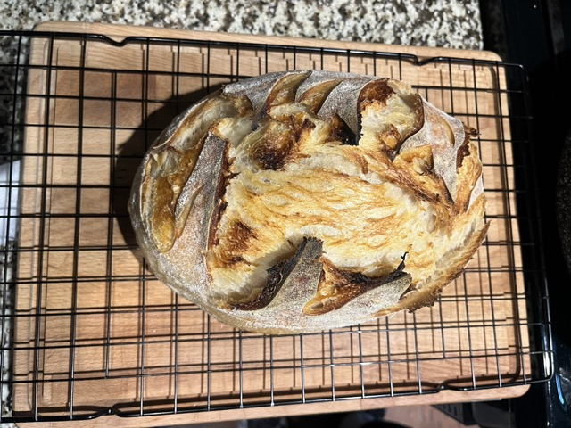
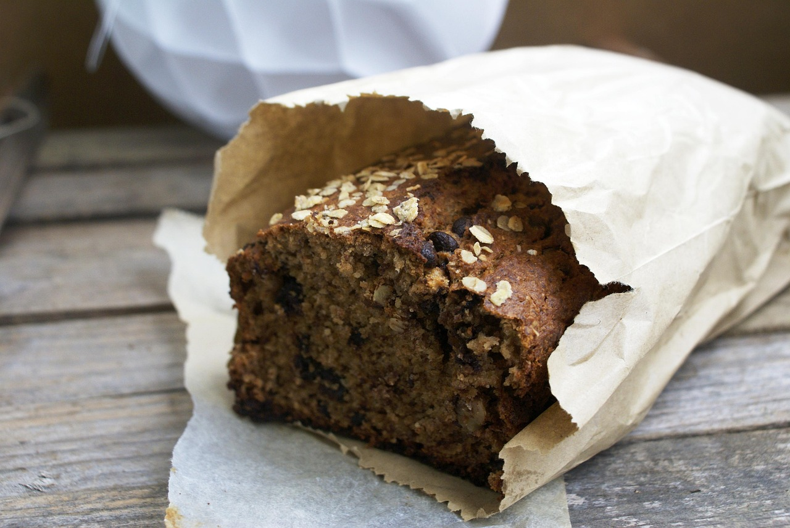
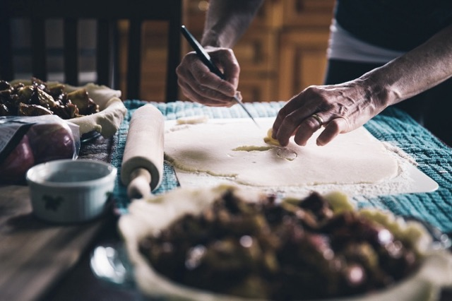
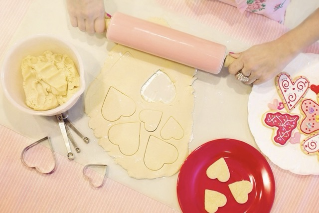
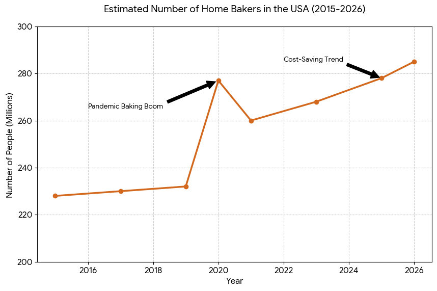

What is Baking?
Baking is the art of creating delicious foods like cookies, breads, and pasteries using different ingredients. It is both a type of science and a creative hobby that can be very exciting. Many people enjoy baking because it allows them to experiment with different flavors and ingredients and create delicious treats for their friends and family. Baking is a great hobby because it always comes with a reward in the end.

The Baker (Who am I?)
My name is Sasha Chernoivan and I enjoy baking as a relaxing and creative hobby. I love trying out new recipes and experimenting with different ingredients. Whether it is cookies, cakes, or different kinds of bread, I love making all kinds of baked goods and try out new things. Anyone can bake with practice, patience, and an interest to experiment. One of my favorite thing to bake is banana bread and you can check out the recipe below.
My favorite recipe:

Free image from pixabay.com
Ingredients:
| 1. | 3 | Ripe bananas (medium/large) |
| 2. | 1/2 cup | Unsalted butter |
| 3. | 3/4 cup | Granulated sugar |
| 4. | 2 | Large eggs |
| 5. | 1 1/2 cups | All-purpose flour |
| 6. | 1 tsp | Baking soda |
| 7. | 1/2 tsp | Salt |
| 8. | 1/2 tsp | Vanilla extract |
| 9. | 1 cup | Chocolate chips |
Instructions:
- Preheat the oven to 350°F. Grease and flour a bread loaf pan (9.25 long x 5.25 wide x 2.75 deep). Lightly roast walnuts on a skillet, continuously stirring so they won’t burn. Coarsely chop and cool to room temperature.
- In a mixing bowl, cream together 8 Tbsp softened butter and 3/4 cup sugar (or honey if using honey).
- Mash bananas with a fork until the consistency of chunky applesauce and add them to the batter along with 2 eggs, mixing until blended.
- In a separate bowl, whisk together: 1 1/2 cups of flour, 1 tsp of baking soda and 1/2 tsp of salt then add to batter.
- Add 1/2 tsp of vanilla extract and mix in chopped walnuts and raisins. Pour into prepared loaf pan. Bake at 350°F for 55-60 min or until a toothpick inserted into the center comes out clean. Let banana bread rest for 10 min before transferring to a wire rack to cool.
When to Bake?
Baking can be done any time of the year, but certain seasons are perfect for specific treats. For example, the holidays are the perfect time to bake cakes and pies, while lighter desserts like cupcakes and cookies are often made during the summer. The great thing about baking is that you can make anything you want, anytime you want. Here are some popular baking treats to make during different holidays.
| Holiday | Best Baked Treats |
|---|---|
| Christmas | Gingerbread Cookies, Sugar Cookies |
| Thanksgiving | Pumpkin Pie, Apple Pie |
| Halloween | Pumpkin Bread, Candy Corn Cookies |
| Fourth of July | Berry Pie, Strawberry Shortcake |
Free image from pixabay.com
Where to Bake?
Most of the time, baking is done in the kitchen where there is access to an oven and baking tools. There are also different kinds of baking classes and bakeries where people have the opportunity to learn new baking skills and techniques. While it is important to have a good location for baking, it is also important to have the best ingredients to be sure your treats turn out delicious.
To find the best organic baking ingredients, you generally have three main options depending on whether you value convenience, bulk pricing, or freshness.
-
Natural & Health Food Stores: Specialty grocery chains are the most reliable "one-stop shops" for organic staples.
- National Chains: Stores like Whole Foods Market or Sprouts carry extensive organic private-label brands (like 365 or Sprouts Organic) which are often cheaper than name brands.
- Local Co-ops: Independent health food stores or food cooperatives usually vet their suppliers strictly, ensuring high-quality organic standards for flour, sugar, and dairy.
-
Online Specialty Retailers: This is the best route for hard-to-find items or buying in large quantities to save money.
- Direct from Mills: Companies like King Arthur or Bob's Red Mill sell organic flours and grains directly through their websites.
- Membership Services: Sites like Thrive Market or Azure Standard specialize in organic goods, with the latter being a go-to for bulk-buying 25lb to 50lb bags of organic flour or sugar.
-
Farmers' Markets: For "wet" ingredients, the farmers' market is usually superior to any shelf-stable option.
- Eggs & Dairy: You can find pasture-raised organic eggs and grass-fed butter or milk, which significantly impact the flavor and color of your bakes.
- Produce: If your recipe calls for fruit, nuts, or honey, buying seasonally and locally ensures the ingredients haven't been sitting in cold storage for months.

Free image from pixabay.com
How to Start Baking?
For someone to start baking, they need basic ingredients like flour, eggs, sugar, and any additional ingredients needed for specific recipes. Finding simple recipes and following them step by step will make starting the baking journey simple. The great thing about taking up baking as a hobby is that you can start small and work your way up.
A few tips for beginners:
- Start with simple recipes and explore more as you go.
- Make sure you measure your ingredients carefully and correctly.
- Preheat the oven before you combine your ingredients.

Free image from pixabay.com
Watch this video to get started with baking:
Why Bake?
Baking is a hobby you can enjoy because it combines creativity and patience, and leads to delicious results. It is both relaxing and rewarding to combine a few simple ingredients, and be able to turn it into a new creation. Baking can also bring people together by sharing your results and ideas with others. Overall, baking is a hobby that can not only bring you good food, but also it is fun for yourself and others.
In the United States, roughly 277 million people engage in home baking to some degree. Home baking experienced a significant increase during the 2020 pandemic, followed by a subsequent steady rise driven by economic factors and hobbyist interest through 2026. This graph shows how the number of home baking changed in the span of eleven years.

AI Prompt: Give me a graph of number of people baking from 2015 to 2026
Why is Baking a Good Hobby?
- Stress Relief and Relaxation: Baking can be calming because staying focused on a task can help people relax and reduce stress levels.
- Enjoyment and Creativity: Many people bake because they enjoy the process. This hobby can allow you to show creativity with decorating treats and experimenting with different flavors and ingredients.
- Celebrations and Traditions: Baking goods can make holidays and events more enjoyable and delicious.
- Business or Income: Many people bake professionally or sell the goods they bake at home through markets, bakeries, or even their own businesses.
AI Prompts
I used ChatGPT to help complete this assignment. I used it for:
-
Used: to get the estimated number of home bakers in the United States.
Prompt:
Give me a graph of number of people baking from 2015 to 2026
-
Used: to get the best locations for buying baking ingredients.
Prompt:
Where to find a best organic ingredients for baking at home
,Make your answer more generic
-
Used: to generate JavaScript to make only one secrion visible at a time.
Prompt:
For html page with multiple sections create script to select one section and hide others